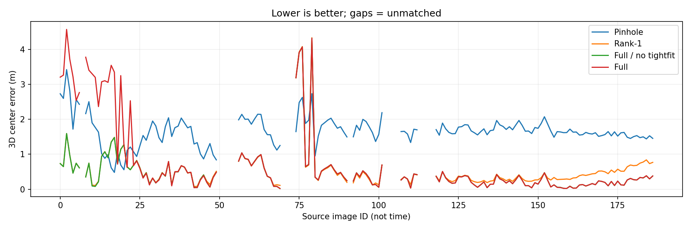

前視看 3D 框的位置；俯視看框的地面範圍重疊。比較影片各格使用同一來源影格。
BEV IoU＝兩個框地面範圍的交集面積 ÷ 聯集面積，0–1，越高越好。框是地面投影，不是車頂輪廓；畫面使用 CARLA 實際俯視相機。3D error＝預測與真值幾何中心距離，單位公尺，越低越好。unmatched 表示未配對，不當作 0。
橫軸＝來源影格；縱軸＝3D 中心誤差（m）。越低越好；斷線＝未配對。曲線不放進影片。

| 設定 | 深度 RMSE (m) | 配對 | 漏檢 |
|---|---|---|---|
| Pinhole | 1.694 | 165 | 34 |
| Rank-1 | 0.762 | 165 | 34 |
| Full / no tightfit | 0.762 | 165 | 34 |
| Full | 1.305 | 165 | 34 |
11/16 控制實驗既有預測，199 張來源影像完整保留；離線重取樣成 10 秒，不代表推論 FPS。方法分格按 image ID 對照；既有 metadata 有三處重複時間／幀號，不宣稱嚴格感測器時間同步。Full＝完整 F 管線，並非 full 矩陣補償變體。預測尺寸先驗與真值不同，框大小偏差也是誤差來源。尚無可核實的真實轉彎因果影片。本版不是新推論。